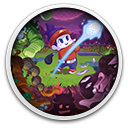

 Cursed to Golf
Details
 |
|
| Playtime | Not Played |
| Last Activity | Never |
| Added | 16/09/2024 23:34:26 |
| Modified | 18/05/2025 0:41:08 |
| Completion Status | Not Played |
| Library | Gog |
| Source | GOG |
| Platform | PC (Windows) |
| Release Date | 18/08/2022 |
| Community Score | 63 |
| Critic Score | 79 |
| User Score | |
| Genre | Adventure Arcade Card & Board Game Indie Puzzle Sport |
| Developer | Chuhai Labs |
| Publisher | Thunderful |
| Feature | Single Player |
| Links | Itch Steam Official GOG Discord Epic Twitch |
| Tag | 2D Adventure Difficult Dungeon Crawler Funny Physics Pixel Graphics Platformer Retro Roguelike Roguelite Sports |
Description

Play as The Cursed Golfer, trapped in Golf Purgatory after a freak accident takes you out as you’re about to take the winning shot of an international tournament! Legend says that playing through the devious courses across Golf Purgatory will get you back to the land of the living and, more importantly, to the trophy you were about to win. Each course is governed by a ghostly Legendary Caddie, who will tutor you in the mystical ways of golf to aid you on your quest for redemption and revival.

Cursed to Golf offers a fresh take on the golfing and roguelike subgenres. Make your way through a hole within the PAR Count or your curse will take you back to the beginning of the course! To add to the challenge, these courses don’t just have bunkers and rough spots but are also chock full of mad obstacles like high powered fans, spikes, TNT boxes, teleporters and a whole load more. It’s all par for the course in this twisted take on the classic game!

Being cursed to play golf forever in the eternity of Golf Purgatory has its benefits, too! Use Birdie-Eye to catch a view of the whole course and see what trials lie ahead. Par count running low? Luckily, gold and silver Shot Idols are peppered throughout the holes, smashing through them with a cinematic flourish will replenish your shots. Ace Cards will turn the odds back in your favour, channeling your otherworldly powers to manipulate the game in incredible ways. Scattershot, U-Turn, Rocketball, Mulligans are just some of 20+ cards you have up your sleeve to turn the tide back in your favour!
Every shot counts!

- Explore the golf-themed world and characters of Golf Purgatory
- Precise “Golf-Like” gameplay across a randomly-ordered course in 4 biomes
- Navigate tough dungeon-like holes filled with wacky hazards
- Golf in style using over 20 unique Ace Card power-ups
- Challenge the world in online leaderboards
- 70+ holes will keep you swinging for eternity